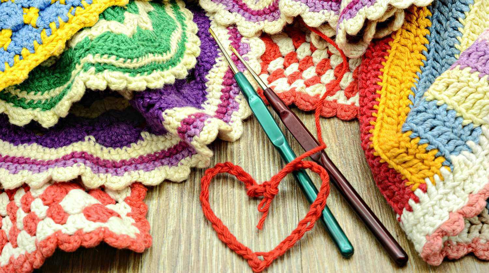

What started as a way to pass time during quarantine has now turned into one of my favorite hobbies. Crocheting is not only relaxing and fun to do, but it allows you to get creative and create a wide variety of projects ranging from scarves and hats to cute decoration items. While crocheting seems quite difficult to learn at first, it gets so much easier after lots of practice. You need to learn the basics first, though!
